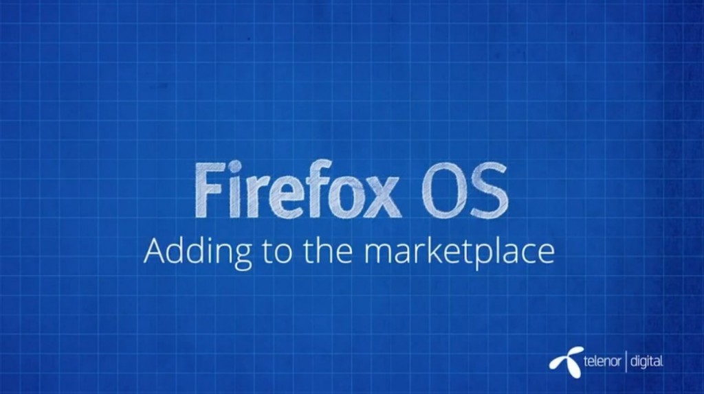

你是熱血的開發者，而且早就想開發自己的 Firefox OS App 嗎？在完成
之後，就應該要把自己的 App 作品提交到 Marketplace 了。除了要能提升自己心血的能見度之外，還有其他小技巧讓自己的 App 更脫穎而出！快來觀賞影片 (中文字幕) 並儘早將自己 App 送進 Marketplace 吧！

發佈至 Marketplace
Firefox Marketplace 可供開發者提交 App，並讓消費者能夠接觸到自己的作品。Marketplace 亦可發佈如 Firefox 桌面版與行動版所適用的 App。而消費者只需要簡單的幾個步驟，就能對 App 評分、提出反饋意見、購買自己所需的 App。要發佈自己的 App 真的很簡單：
- 為 manifest 檔案 (你可能會在「應用程式管理員 App Manager」看到中文翻譯為「安裝資訊檔」) 設定網址
- 為 App 填寫必要敘述說明 (可讓消費者更快找到自己需要的 App)
- 提供 App 的截圖或影片
- 為 App 挑選適合的分類
- 填寫自己的電子郵件，讓 Mozilla 能聯絡你
- 如果開發者有自己的隱私權政策與支援服務網站，也應提供給消費者知道
- 為自己的 App 設定內容分級
App 在提交到 Marketplace 之後，均會由 Mozilla 審查團隊進行審閱，並在幾天內就會通知審查結果。如果 App 有任何問題，在提交期間就會收到相關的檢驗訊息。開發者也有可能收到詳細的問題說明，並獲得修復問題的方法。
看完影片，你是否對 Firefox OS App 有更深入的了解呢？請別錯過即將陸續發佈且完成中文化的系列影片。
你也可以直接觀賞 MDN 上的原文系列影片《Screencast series: App Basics for Firefox OS》。
亦可欣賞中文版的《系列影片：Firefox OS App開發入門》。我們將逐一完成影片的中文化，並隨時更新各影片所對應的文章內容。